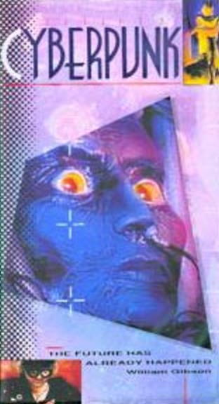

Movie review by : SFAM
Year : 1990
Directed by : Marianne Trench
Written by : Documentary
Rating : 6/10

Overview: Cyberpunk is a documentary that looks back at the 80s cyberpunk movement, and more specifically, how this has led to a trend in the "real" world where people were starting to refer to themselves as "cyberpunk". The documentary sees "cyberpunks" as being synonymous with hackers. A number of writers, artists, musicians and scientists are interviewed to provide context to this movement. The guiding meme, as told by Gibson, is that information "wants" to be free. 60s counter-culture drug philosopher, Timothy Leary, provides a prediction that cyberpunks will "decentralize knowledge", which will serve to remove power from those "in power" and bring it back to the masses. Many different potential technologies are discussed, including "smart drugs", sentient machines, advanced prosthetics ? all of which serve to give context to the idea of post-humanity and its imminent arrival on the world stage.

As a documentary, Cyberpunk is haphazard. Some of the interviews, such as those by William Gibson and Timothy Leary are interesting, while others are mired in mediocrity. To mitigate the boredom of some of these, the film makers stoop to using cheesy visual effects to increase the interest. In one case, an interviewer is duplicated to four small windows, and in another, the talking head is completely moiréd out except for their eye. In fact, we are barraged by a stream of weird, experimental effects ? one imagines that these are supposed to give us the "hacker-cyberpunk mindset" or something. In general, they don't work, but I'm guessing the late 80s CG graphics probably looked far more futuristic back then.
The Bottom Line: This documentary really almost serves as a time capsule for capturing a still emerging hacker counter-culture. From a cinematic perspective, I'm saddened that Blade Runner was virtually non-existent in this. While they covered books, music (Front Line Assembly was the main one), science and art (Jaron Lanier, who coined the term "Virtual Reality"), their coverage of film was pretty sparse, generally restricted to obscure animes (which looked cyberpunk, but unfortunately I'm not familiar with). I will say I liked the younger William Gibson LOTS more than on his No Maps for These Territories documentary. He talks excitedly about cyberpunk, hackers, and our direction towards post-humananity. Ten years later, Gibson comes off completely bored with these ideas, and almost seems to wish he was never associated with the term, Cyberpunk.